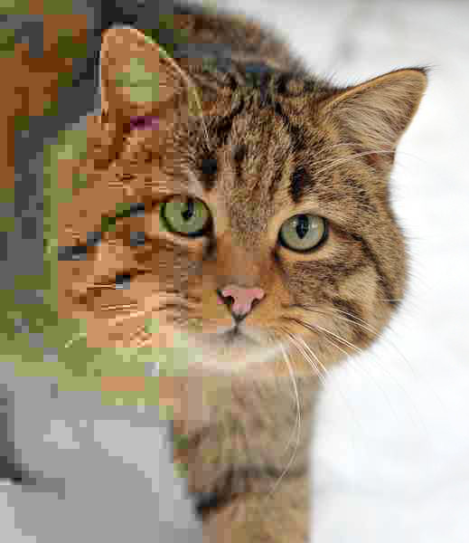

JPEG는 사진의 모든 픽셀을 저장하지 않습니다. 사람 눈이 잘 못 보는 부분 — 미묘한 색 차이, 작은 무늬 — 을 과감하게 버립니다. 그러면 파일은 10분의 1로 줄어듭니다.
AI의 학습도 똑같습니다. 모든 데이터를 외우지 않고 — 패턴과 평균만 남깁니다. 그래서 "비슷한 답"은 잘 하고, "정확한 인용"은 못 합니다. 흐릿한 JPEG처럼 — 버린 자리는 돌아오지 않습니다.